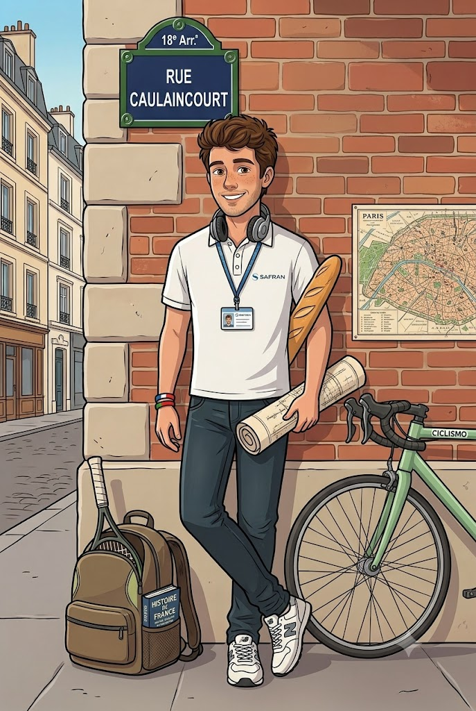

Sono Jordan, nato e cresciuto a Parigi tra caffè e baguette. Amo esplorare angoli nascosti delle città, fotografare l'ordinario e trovarlo straordinario. Ho incontrato Sara quasi per caso — o forse no, forse è stato l'universo a decidere. Da quel giorno il mondo ha preso un colore diverso.
PASSIONI